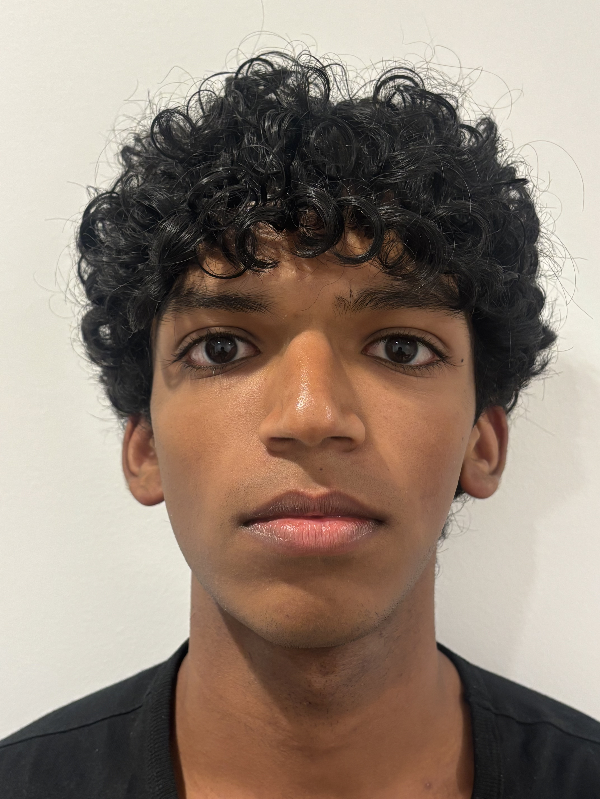
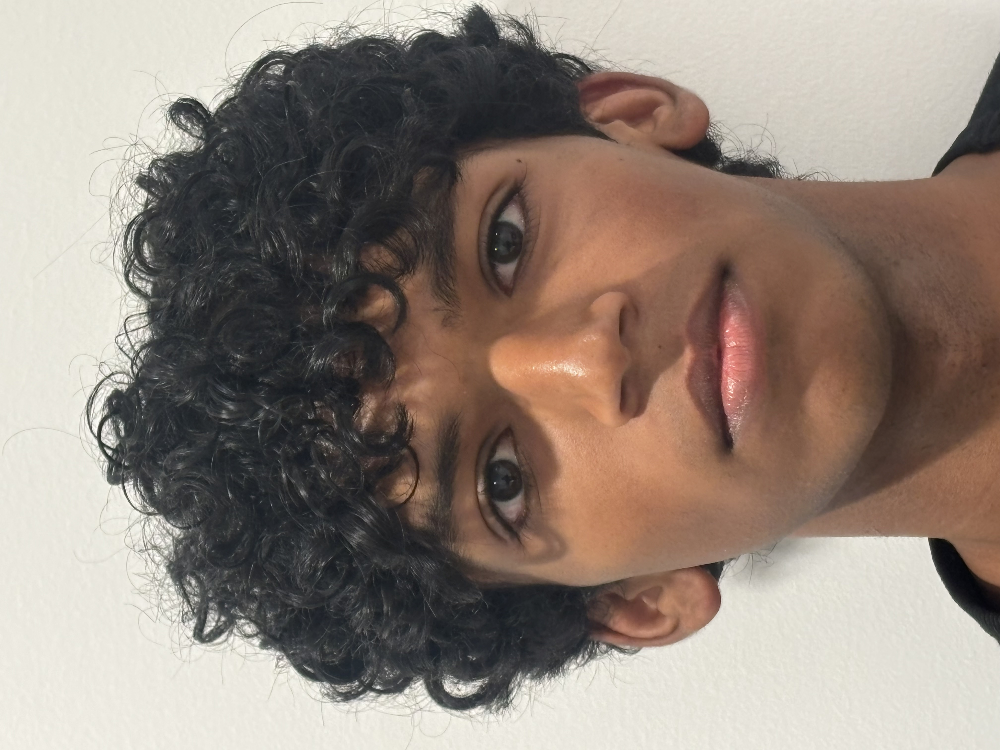

Part 1: Selfie | The Wrong Way vs. The Right Way


The close-up photo looks distorted and makes features such as my nose, which is relatively larger than the rest of my face, look significantly bigger. Stepping back and zooming in keeps the same size ratios of my facial features, making the photo look more natural and better.
Part 2: Architectural Perspective Compression
The zoomed-in photo looks flatter because we are farther away, which reduces the apparent difference between close and far parts of the scene. By walking closer and zooming out, the perspective and depth become more significant.
Part 3: The Dolly Zoom


The Hydro Flask remains constant while the scale and perspective of the background change, creating the “dolly zoom” effect.